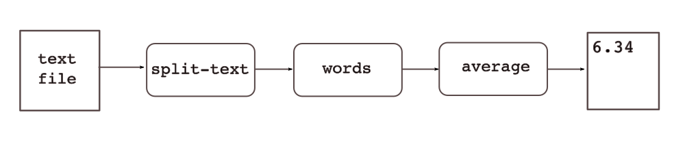

This page describes the set up of a simple project, step by step. All required tools and files are available in the Genet distribution, in directory website/example.
The example project, called "genet-example", defines three tools:
These tools can be used together to compute the average length of words in texts (do not forget this is for an example project, for a pedagogical purpose):
We will show how to use Genet to set up a continuous integration environment for our project.
The genet tools must be in our path. The output of commands is not shown. You are encouraged to type the commands of the example to get familiar with Genet.
The first thing to do is create the database. Here we use a MySQL database called genet_example:
$ mysql -u root -p mysql> create database genet_example; mysql> grant all privileges on genet_example.* to genet@localhost;
Then we have to create the directory of our project, in /tmp/genet-example. The structure of this directory is described here. To do so, we use the genet tool. At last, we make /tmp/genet-example/in a git repository:
$ genet init-dir /tmp/genet-example $ git init /tmp/genet-example/in
The initialization of the directory creates a default config.txt file in the project directory. It contains information regarding the project name, database connection and web interface. We edit this file to:
project_name = "Genet-example" project_id = "genet-example" db = { (* postgresql or mysql *) engine = mysql name = "genet_example" user = genet host = localhost password = "" } (* do not forget ending / *) rest_api = "http://localhost:8082/"
Next we initialize the database tables:
$ genet --config /tmp/genet-example/config.txt init-db
For the next operations, we change to the project directory, so that we do not have to use the --config option, as by default the config.txt file of the current directory is used:
$ cd /tmp/genet-example
At this point, you can launch the web server to browse your project. Just run
$ genet-rest
and visit http://localhost:8082/.
Then, we have to define filetypes, to represent the types of files read and produced by our project's tools. Each filetype has an id, a file extension and a description.Here, we have three filetypes:
The following commands will create the filetypes:
$ genet add filetype "text" txt "Source text file" $ genet add filetype "words" txt "Words, one per line" $ genet add filetype "number" nb "A real number"
genet add commands usually returns the url of the newly created item. Each item has its own unique url, used as identifier in other commands. Moreover, these urls can be used in the web interface to access the items; the items are resources, which can be refered to in RDF graphs, for example.
We can use the genet query subcommand to list filetypes:
$ genet query filetypes
The next step is to define our three tools in our project. The term "tool" must be taken in the broad sense: it can be an executable or a whole software, project or package providing various tools (executables). For each tool, we can define branches, versions and interfaces. Interfaces are commands associated to a tool, a specific branch or a specific version. Interfaces are used to represent:
Each interface has a command-line attached. This command will be run when executing a chain where this interface appears (see below). In the provided command line, %v will be replaced by the tool version. This allows to have various versions of a tool installed in places differing only by the version number in the command line path.
For our example project, we'll act like if our three tools are developped separately, and so their version numbers are independent. Each of our tools is composed of only one executable.
To install the tools, go to the website/example directory of the Genet distribution and type
$ make install
This will install tools in the /tmp/tools directory.
We start by defining our split-text tool. We show the output in comment, because it is used from one command to another:
$ genet add tool split-text # http://localhost:8082/tools/split-text
We then add a O.x branch:
$ genet add branch http://localhost:8082/tools/split-text 0.x # http://localhost:8082/tools/split-text/branches/0.x
In this branch, we define a 0.1 version:
$ genet add version http://localhost:8082/tools/split-text/branches/0.x 0.1 # http://localhost:8082/tools/split-text/versions/0.1
Then, we define a new interface, associated to the tool, which means this interface will be supported by all versions of the tool. We could have defined the interface only for a branch; in this case, all the versions "under" the branch would have offered the interface. We could also associate an interface to a specific version. Note here the -p option used to provide the command line of this interface:
$ genet add interface -p "/tmp/tools/split-text-%v" \ http://localhost:8082/tools/split-text split-in-words # http://localhost:8082/tools/split-text/interfaces/split-in-words
Next, we add two ports to this interface, one for input and one for output. Each port has an associated type, so that some controls will be done when defining treatment chains.
Let's add an input port ("in") for our interface, by giving a filetype id ("text"):
$ genet add port http://localhost:8082/tools/split-text/interfaces/split-in-words "in" "text" # http://localhost:8082/tools/split-text/interfaces/split-in-words/in/1
Then we add an output port ("out"), with another filetype id ("words").
$ genet add port http://localhost:8082/tools/split-text/interfaces/split-in-words "out" "words" # http://localhost:8082/tools/split-text/interfaces/split-in-words/out/1
When the command associated to the interface will be run, it will be given, in this order, the list of input arguments (files and/or directories) and the list of output arguments (files and/or directories). Here our interface command will take two parameters: an input file and an output file.
We can list the available interfaces with the following command. By now, this will list the only interface we defined at this point:
$ genet query interfaces
# http://localhost:8082/tools/split-text/interfaces/split-in-words : text -> words
We define the "words" tool the same way as above, except that some commands below use the output of previous commands to avoid typing the urls of created items:
$ TOOL=`genet add tool words` # http://localhost:8082/tools/words $ BRANCH=`genet add branch ${TOOL} 0.x` # http://localhost:8082/tools/words/branches/0.x $ VERSION=`genet add version ${BRANCH} 0.2` # http://localhost:8082/tools/words/versions/0.2 $ INTF=`genet add interface -p "/tmp/tools/words-%v" ${BRANCH} unique-words` # http://localhost:8082/tools/words/interfaces/unique-words $ genet add port ${INTF} "in" "words" $ genet add port ${INTF} "out" "words"
Then, we do the same to define the "average" tool with one interface:
$ TOOL=`genet add tool average` # http://localhost:8082/tools/average $ BRANCH=`genet add branch ${TOOL} 0.x` # http://localhost:8082/tools/average/branches/0.x $ VERSION=`genet add version ${BRANCH} 0.1` # http://localhost:8082/tools/average/versions/0.1 $ INTF=`genet add interface -p "/tmp/tools/average-%v" ${BRANCH} line-length` # http://localhost:8082/tools/average/interfaces/line-length $ genet add port ${INTF} "in" "words" $ genet add port ${INTF} "out" "number"
The next step is to define a chain, that is a data flow composed of interfaces, whose input will be a test case (see below). For our project, we will define one chain using our three tools.
A chain is defined in a chain module; a chain module is defined in a .gnt file, in the in/chains/ directory of our Genet project.
Here we define a Test module, with only one chain, called words_avg_length. The fullname of the chain is then Test.words_avg_length. To do so, we type the following code in the in/chains/test.gnt file:
chain words_avg_length (* This chain reads a text file and output the average length of the different words used. *) { in: text i1 ; out: number o1 ; (* operation "split" calls the interface "split-in-words" of tool "split-text" *) operation split : "/split-text/split-in-words" ; (* operaton "words" calls the interface "unique-words" of tool "words" *) operation words : "/words/unique-words" ; (* operation "avg" calls the interface "line-length" of tool "average" *) operation avg : "/average/line-length" ; (* add data flow *) i1 -> split.1 ;(* first input of chain to first input of split *) split.1 -> words.1 ; (* first output of split to first input of words *) words.1 -> avg.1 ; (* first output of words to first input of avg *) avg.1 -> o1 ; (* first output of avg to first output of chain *) }
Revisions of chains are handled with git. So we add our chain file to git:
$ (cd in/chains && \ git add test.gnt && \ git commit -am"add test chain")
We can check our chain by visiting its url http://localhost:8082/chains/Test/words_avg_length or just test the syntax with the following command:
$ genet chain test in/chains/test.gnt
An input is a set of data and a list of chains to apply to the data. A pair (data, chain) can be considered as a test case.
Now we will define such an input. The data will be a simple text file. The chain to apply will be Test.words_avg_length we defined above.
Inputs are placed in in/data/, with one directory by input. The input is described in the spec.in file. Other files and directories in the input directory can be referenced from the spec.in file to be used an input data for the chains to apply.
Let's create a test1 directory under in/data/:
$ mkdir in/data/test1
Then, let's copy a text file, for example this one. Next, we create the in/data/test1/spec.in file with the following contents:
(* Input files and directories; order matters *) in = ["sue.txt" ] (* The chains to apply *) chains = [ "Test.words_avg_length" ]
Revisions of inputs are also handled by git, so we add these two files to git:
$ (cd in/data && \ git add test1 && \ git commit -am"add input test1")
Before being able to apply a chain on an input, the chain must be flattened. Indeed, each chain operation can refer to an interface (as in our example) or another chain. So we need to flatten the chain to have only reference to interfaces. Moreover, flattening the chain will give us a stable reference to chain, associated to the git ids of the source chains it was built from.
To flatten our Test.words_avg_length chain, let's just run the following command:
$ genet flatten Test.words_avg_length
# Test.words_avg_length => http://localhost:8082/flat-chains/Test/words_avg_length/...
Now that we have defined an input and flattened the chain it refers to, we can execute this flattened chain to obtained instanciated chains.
Each flattened chain can give various instanciated chains. Each instanciated chain corresponds to a combination of versions of the tools used in the chain. So, if a chain uses interfaces from two different tools, T1 and T2, with T1 having three versions and T2 two versions, then 3 x 2 instanciated chains are possible.
By now, we have only one version per tool, so we will get only one instanciation chain, by running the following command. We indicate to execute chains on the test1 input:
$ genet exec test1
The flattened chain executed is the last chain flattened from the chain specified in the input. The instanciated chain can be browsed using the form at http://localhost:8082/inst-chains.
If we're satisfied with the result of the execution, we can set this instanciated chain as a reference for this input and this source chain:
$ genet add refinst test1 Test.words_avg_length \ http://localhost:8082/inst-chains/Test/words_avg_length/...
Now suppose we developped and installed a new version of the "words" tool, version 0.4, which lowercases all words. We want to re-run our test1.
First, we add this new version:
$ genet add version http://localhost:8082/tools/words/branches/0.x 0.4 # http://localhost:8082/tools/words/versions/0.4
Since this version is under the 0.x branch, it means that the unique-words interface is provided by this new version. Then, we can execute our test, and this new version of the tool will be used when computing the combinations of tools to use to execute the last chain flattened from Test.words_avg_length:
$ genet exec test1
Then, we can compare this new instanciated chain with the reference instanciated chain:
$ genet diff http://localhost:8082/inst-chains/Test/words_avg_length/...
genet diff can be given two instanciated chain urls to compare the output of any instanciated chains. If only one is given, it compares against the reference instanciated chain, for the same input and source chain of the instanciated chain given on command line.
The web interface provides a form to compare two executions: http://localhost:8082/diff/inst-chains
The --url-if-diff option of genet diff prints a url to the comparison results if there is a difference. This is useful for example to nightly compare new executions with reference executions, and send an email with the url of differences, if any.
The default diff command used to compare execution results can be specified in two ways. First, one can use the --diff option of genet diff to specify a command to run, instead of the default one (diff -r -u).
Another way is to define a diff command associated to a name, using the following command:
$ genet add diff-command "mydiff" "diff -r -w -u"
Then, the name mydiff can be given to the --diff option of genet diff, to use the associated command.
Note that the web interface does not allow using arbitrary diff command, for security reasons. Only predefined diff commands added with genet add diff-command can be used.
Now suppose we developped and installed a new version of our "average" tool, which removes the extrema values before computing the average.
Let's add this new version:
$ genet add version http://localhost:8082/tools/average/branches/0.x 0.2 # http://localhost:8082/tools/average/versions/0.2
Now, if we ask for execution of chains for the test1 input, we will have 1 x 2 x 2 combinations of tool versions, i.e. 4 instanciated chains. Two have already been executed, so the following command will trigger the execution of the two remaining combinations:
$ genet exec test1
genet diff can also be used to compare not only execution final results, but also intermediate command results. In the web interface, when looking at an instanciated chain, you can click on a chain node to get its url. You can then give two of these urls to genet diff to compare, for example, the outputs of the "words/unique-words" in two executions.
With time, the number of tool versions will increase, and so the number of combinations of versions used to execute chains. If a new version of each tool is added each night to perform tests with last changes, this can lead to a lot of executions stored in database, most of them not being relevant.
To prevent this problem, a tool version can be flagged as active or not. By default, it is active, i.e. it is used when computing the various tool version combinations to use. A command allows to set a version as inactive, for example here we set version 0.2 of words as inactive:
$ genet set active http://localhost:8082/tools/words/versions/0.2 false
If we have scripts adding new versions each night to run our tests, we can use the following algorithm in these scripts:
The various genet subcommands can be used in scripts to perform nightly actions. See the reference documentation.